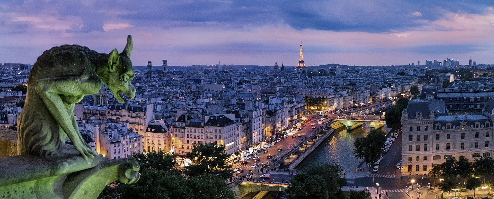
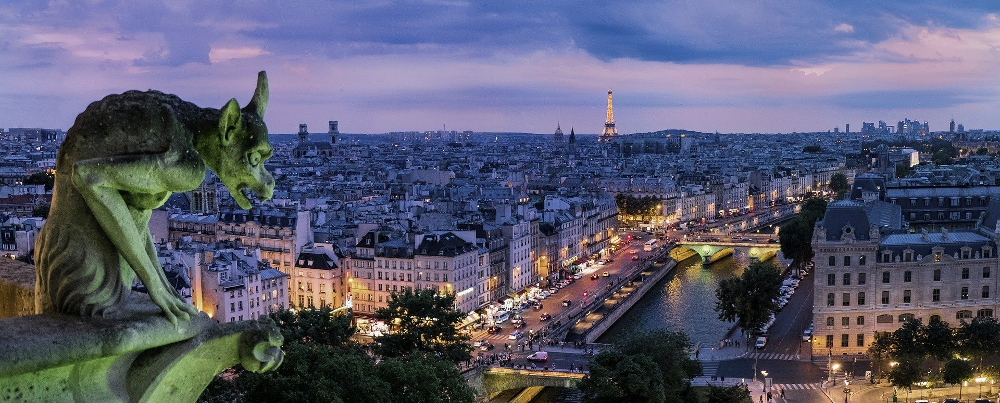

穿越中...
穿越中...
 千亿级像素全景图，鼠标旋转缩放
法国-巴黎
千亿级像素全景图，鼠标旋转缩放
法国-巴黎
 


Welcome to Paris, France
"Je t'aime，Paris!"
巴黎，史前还埋藏在海平面下的这块土地，在建城2000多年后的今天，这个名字不会让任何一个人陌生。这座世界历史文化名城被誉为花都、光之城、浪漫之都、时尚之都、美食之都⋯⋯也许你只是想去蒙田大道纵情购物，也许只是想去塞纳河边散步，也许你只是想去米其林餐厅尝尝法式大餐，也许只是想去左岸喝喝咖啡，也许你只是想去卢浮宫看看蒙娜丽莎的微笑⋯⋯也许这个地球上只有巴黎可以满足所有人的期许。
巴黎的历史有2000多年，最早是从西岱岛发祥的。据说，当时居民仅几百人，居住在不到半平方千米的旧城岛上。
公元四世纪，罗马人的一个部落强占岛上高卢人村庄，并建立了“巴黎吉”人的首府，巴黎从此得名。
公元六世纪起，巴黎成为法兰西王国的首都，以后历代法兰西的封建王朝均以巴黎为国都。
十三世纪时，巴黎的人口已达7万。菲利普·奥古斯特国王下令修建城墙和防御工事，西岱岛人口不断增加，成为王国的权力中心。全城的贸易和手工业作坊逐渐集中在塞纳河右岸，市场开始形成。教育、学术和宗教界人士大多住在塞纳河的左岸。
法国人的浪漫也许被理解为街头小巷里的热吻，这方面也许他们不及意大利人和西班牙人；但是在法国，“在一起”的不一定是一男一女， “在一起”不一定要结婚，同居关系也可以享受法律保护。法国人虽然有引以自豪的历史文化，但他们对各种外来文化也有着极高的包容度.
也许法国人过于自由民主，所以罢工对于他们来说是家常便饭，几乎每天都有各种不同主题、不同职业、不同规模的罢工，其实绝大部分罢工并不会影响游客的生活，反而能让大家更深的接触这个国家，但是交通部门罢工的时候必须留意。关于政治，法国人民更是大度开放，你很有可能在街上碰到某位高官甚至总统，他们会平易的跟你打个招呼握手寒暄下，9月的遗产周还会在自己府上迎接民众。

法国文化富有多元性，13世纪以来法国都是世界文化中心之一。法国文化具有浓厚的哥德式和天主教式融合的风格。现代法国文化则因为经历了许多挫折，例如英法百年战争、法国王朝中央集权制专政时代、法国大革命、普法战争、巴黎公社、两次世界大战等等，这一切都对法国文化产生严重的不良影响和蹂躏践踏，但在这个过程当中又不断涌现和产生出新的文化融合来，造就出今天的法兰西文化；然而，这自然就与古代古典的法兰克文化相对地显得曲折离奇和大相径庭了。